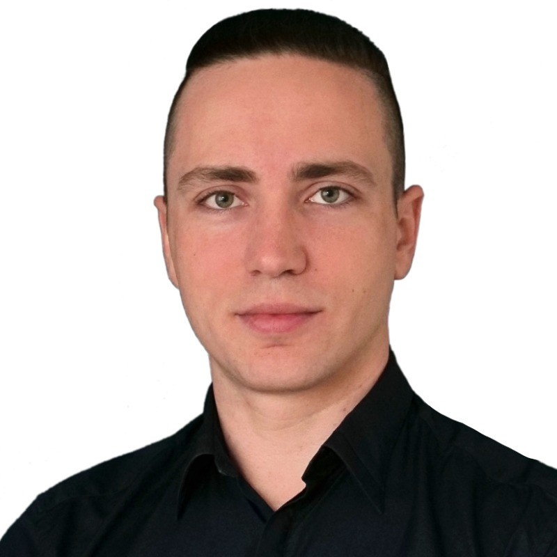

Roman Freeman
Test Automation Architect | SDET | QA Automation

Summary
I specialize in crafting tailored, scalable testing frameworks that empower teams to deliver reliable, maintainable, and high-quality software with confidence. Drop me a message on LinkedIn or email me: freeman.rmn at gmail.com
Experience
Roman Freeman
July 2021 - Present
Test Automation Architect | Consultant
Helping established corporations and small businesses with automation and workflow optimization
- STIHL (power equipment manufacturer): fixed and optimized existing Azure CD pipelines to eliminate 40% false-negative rate and save up to 30% of on-demand cloud resource costs
- Dentsply Sirona (dental equipment supplier): created a framework for visualizing company’s organizational structures, improving inter-team communication in a large corporate setting
- Small businesses: optimized a company website, infrastructure and processes, allowing to close a full-time IT support position in favor of rare per-hour maintenance appointments
- Coaching, mentoring: empowering teams to become quality-oriented, independent and more efficient at testing
AWIN AG (Axel Springer)
April 2016 - June 2021
Senior Software Engineer
Leading affiliate marketing company
- Designed, planned, and kicked off decomposition of a dinosaur monolithic app (2001 fossil), making it AWS-cloud compatible and using integration tests to ensure smooth transition phase
- Established formal processes, code review and documentation, reducing critical issues by 70%
- Saved the company an estimated 100-200K EUR/year in additional engineering costs by retiring an important but extremely outdated and hard to maintain piece of finance software
- Optimized, automated and documented the company localization process, cutting the delivery time 3x
- Automated inefficient manual workflows, freeing up engineering resources to deliver features and meet OKRs
Carmudi GmbH (Rocket Internet)
June 2014 - April 2016
Lead QA Automation Engineer
Multi-lingual classifieds platform in 20+ developing countries
- Built a Webdriver/Appium framework to cover a classifieds platform (20+ countries+languages)
- Designed and introduced API for resetting/retrieving data for end-to-end tests in production
- Built and mentored 2 QA teams, securing continuous delivery and launch of new products in a fast-paced environment
GlobalLogic Inc.
November 2012 - May 2014
QA Automation Engineer
Digital services and outsourcing company
- Developed Webdriver-based testing framework to cover business management web and mobile apps
- Saved the team 2-3 hours every single working day by fixing internal tools and developing a script to automate installation of nightly builds, introducing continuous integration
Postindustria Ltd.
November 2011 - November 2012
Test Automation Engineer
IT Services and Consulting company
- Increased performance and usability of automated tests by rewriting the entire codebase and optimizing the existing distributed automated tests setup by switching to Webdriver
- Eliminated manual regression testing effort for a customizable ecommerce platform with multiple regions and languages by automating 100% of test cases
GFL Inc.
June 2010 - November 2011
QA Engineer
IT Services and Outsourcing company
- Filed the most bugs (including critical) in the QA team of 30+ while testing web hosting services and various related web and mobile apps (iOS, Android, Blackberry, Windows Mobile)
- Pioneered covering manual test cases with automated tests in the team and the company, reducing time for regression tests by the factor of 2 to 5, depending on the app
Education
Sukhomlynsky National University of Mykolaiv
September 2008 - July 2012
Bachelor's degree Applied Mathematics
Volunteer
Colors of Hope Foundation ∙ https://colorsofhope.foundation/en
January 2023 - Present
Ambassador, Translator
Disaster relief organization
References
Roman was very passionate about delivery and quality but at the same time he had deep understanding of business needs and was able to look at the problem from different angles. As a result, we delivered MVP in about 2 month with minimal amount of critical issues. | Read full text on LinkedIn.
— Jane
Roman helped architect the design of the team's microservices, messages/events, databases and UI alongside his expertise in coding and testing, making him a valuable T-shaped member of the team. Aside from the tech, he is a really fun and positive person to work with and learn from. | Read full text on LinkedIn.
— Chris
Roman was our main point of contact on the engineering side for any internationalization and localization topics and processes. He streamlined processes on the technical side of localization, developed tools and environments for easier localization and localization testing, and made sure process improvements were documented. | Read full text on LinkedIn.
— Mirjam
Roman went deep into every task he had, he has a broad knowledge of his field and related processes. He is always very curious to know how other systems and procedures work outside of his direct ownership so that he can better understand and improve them. He is such a good person and incredibly easygoing, working with him is frictionless and a lot of fun. | Read full text on LinkedIn.
— Damnjan
Roman was demonstrating superior technical ability and produced work of exceptional quality. His willingness to handle challenging projects and focus on completion has amazed me many times. | Read full text on LinkedIn.